A clean everyday tote for accessories collections, boutique retail and private-label ranges. The sourcing brief should connect the desired silhouette with practical carrying capacity, lining and handle construction.
Materials to discuss
Leather type, thickness and temper; lined or unlined body.
Range & customisation
Dimensions, handle drop, internal pockets, colour and branding.
Sample review
Review grain and shade variation, reinforced handle attachments, seams and edge finishing.
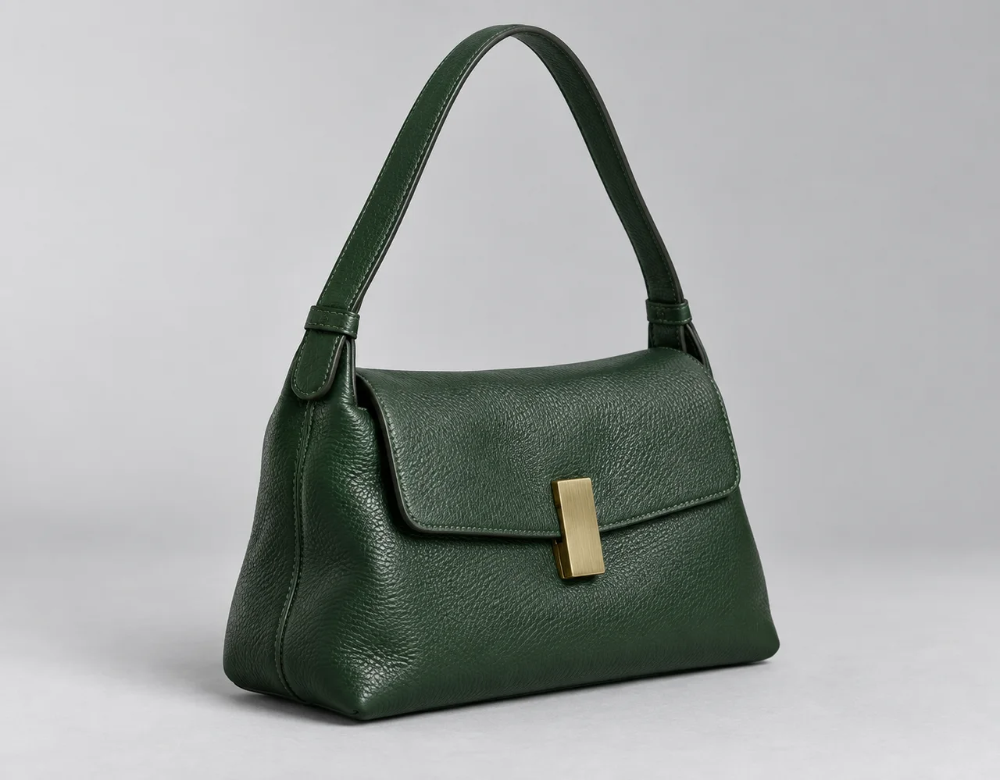
Leather handbags
Leather handbags
Structured handbags for boutique accessories and private-label ranges. Translate the desired silhouette into an agreed construction brief covering capacity, opening, lining and handle attachment before comparing supplier samples.
Materials to discuss
Leather grade and thickness, lining and metal finish.
Range & customisation
Shape, dimensions, strap length, pockets and discreet branding.
Sample review
Review gusset symmetry, closure operation, handle reinforcement and edge finishing.
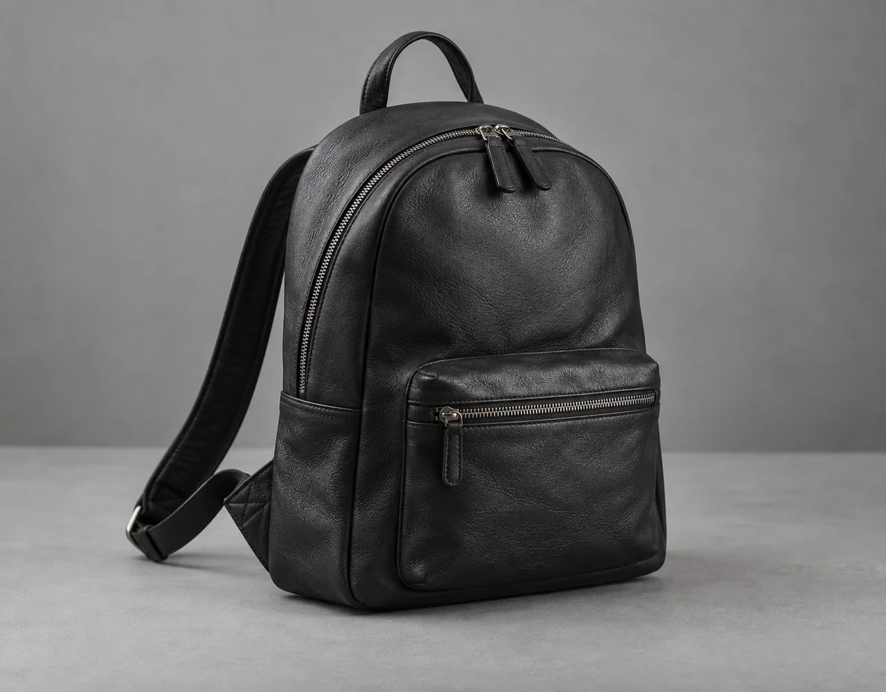
Leather backpacks
Leather backpacks
Backpacks combine material character with a more demanding carrying construction. We can help structure a sourcing brief for daily or work use, with clear compartment dimensions and sample review of the attachment points.
Materials to discuss
Leather type, lining, padding and zip or buckle specification.
Range & customisation
Capacity, shoulder straps, internal sleeves, pockets and branding.
Work bags need to be specified around the intended device and daily contents, not exterior measurements alone. Define usable internal space, compartment layout and carrying options so proposed samples can be assessed consistently.
Materials to discuss
Leather thickness, lining, padding and hardware finish.
Range & customisation
Device dimensions, document space, handles, shoulder strap and organisation.
Sample review
Check usable fit, zip travel, pocket access, handle construction and protective padding.
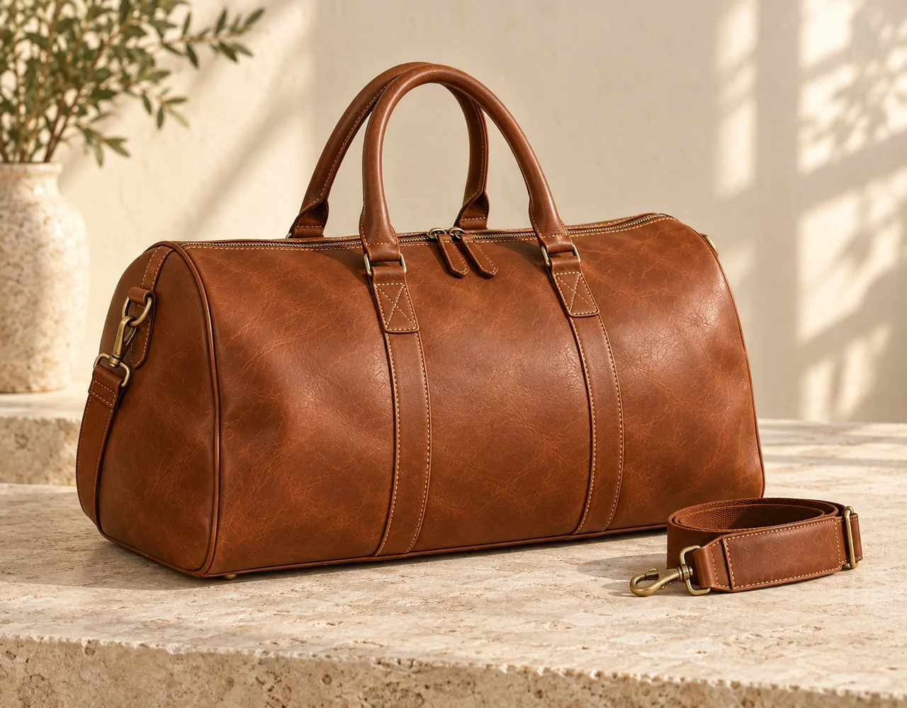
Leather travel duffel bags
Leather travel duffel bags
Travel duffels offer a substantial leather-goods direction for weekend and gifting ranges. Set the required capacity, opening and carrying method early, with sample approval covering workmanship and practical packing access.
Materials to discuss
Leather construction, lining, webbing and metal fittings.
Range & customisation
Dimensions, opening length, shoulder strap, internal pockets and packaging.
Sample review
Review handle and strap attachments, zip operation, base construction and agreed load testing.
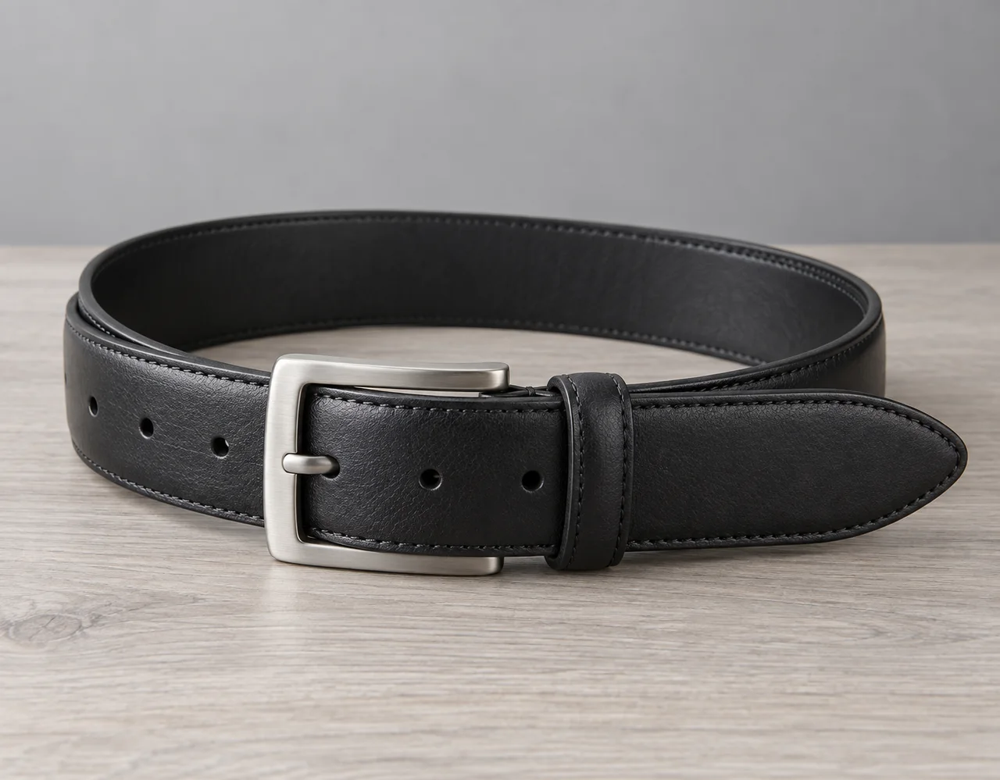
Leather belts
Leather belts
Leather belts can be developed for everyday accessories, workwear and gifting ranges. Specify the strap construction, width and size grading, then align buckle geometry, leather finish and presentation packing before approving samples.
Materials to discuss
Leather construction, lining if relevant and buckle material.
Range & customisation
Strap width, length grading, buckle style, embossing and presentation packing.
Compact wallets and cardholders can anchor an everyday accessories collection. Begin with the cards and notes they need to accommodate, then develop pocket construction, leather thickness and presentation packing around practical use.
Materials to discuss
Leather construction, lining and reinforcement.
Range & customisation
Fold format, card capacity, dimensions, embossing and gift packaging.
Leather aprons can bring a distinctive material character to hospitality, craft and workshop collections. Specify the intended activity first: decorative or general-use apparel must not be presented as certified protective equipment.
Materials to discuss
Leather thickness, flexibility and strap materials.
Range & customisation
Coverage, adjustable straps, utility pockets and logo placement.
Sample review
Review comfortable fit, tie and strap attachment, pocket reinforcement and care instructions.
Share references, specifications, quantity and destination market. We can discuss supplier options, sample development, pricing and timelines for your brief.
Cushion covers offer a flexible starting point for a coordinated home-textile collection. Build the range around agreed fabric references, dimensions and closures, then assess samples for the finish and hand feel your customers expect.
Materials to discuss
Cotton, linen or blends, subject to supplier confirmation.
Range & customisation
Weave, embroidery, piping, zip type, sizes and colour palette.
Sample review
Check dimensions, seam construction, zip function and agreed wash or shrinkage results.
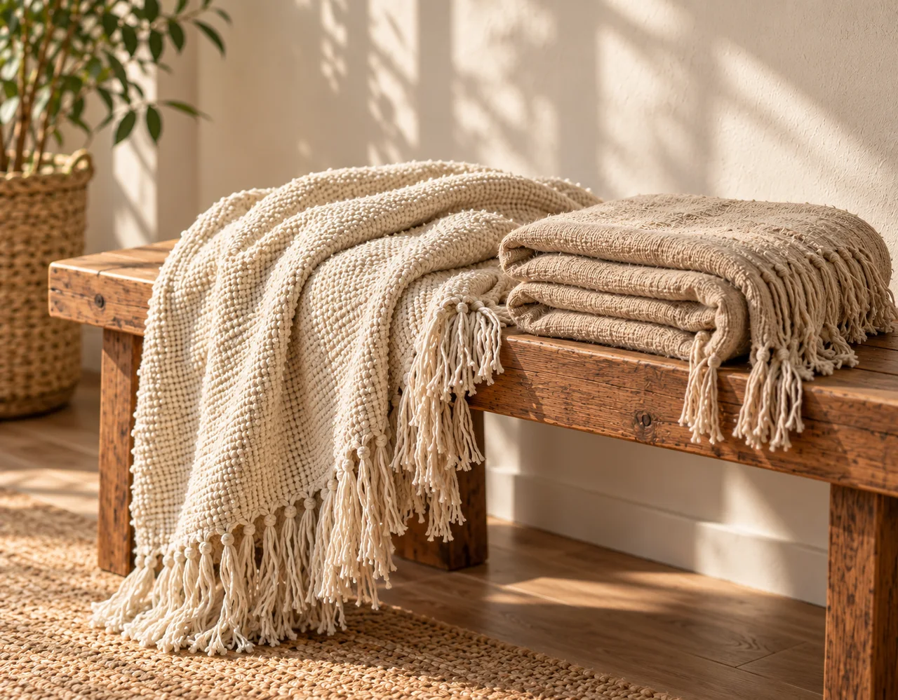
Throws & blankets
Throws & blankets
Throws and blankets add texture to living-room, bedroom and gifting ranges. A clear brief covers fibre composition, finished weight and drape, with sample approval based on both appearance and everyday care.
Materials to discuss
Proposed yarn composition, weave or knit and finished weight.
Range & customisation
Size, colour, pattern, fringe and folded or retail-ready packing.
Sample review
Review hand feel, snagging, edge finish, colour consistency and agreed wash testing.
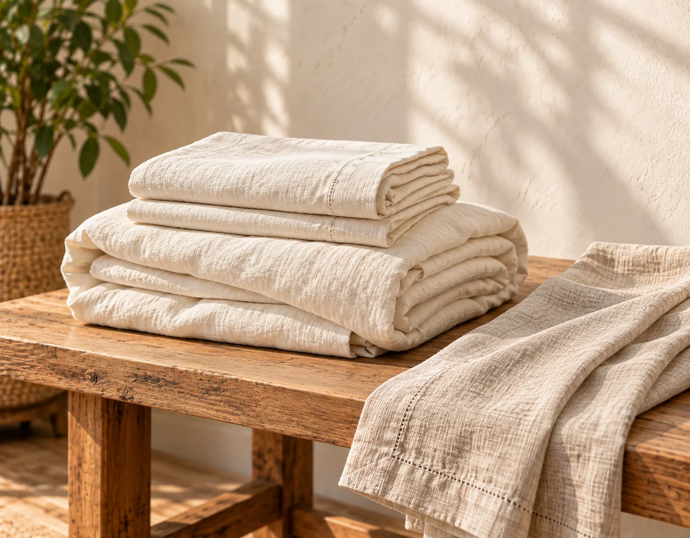
Table & bed linen
Table & bed linen
Table runners, napkins, tablecloths and bed linen can be developed as coordinated sets or individual pieces. Define the end use and exact measurements early so suppliers quote comparable fabric and construction specifications.
Materials to discuss
Fibre composition, fabric weight, weave and finish.
Range & customisation
Set contents, dimensions, hem style, embroidery and labels.
Sample review
Check sizing, square corners, seam finish, shade matching and care requirements.
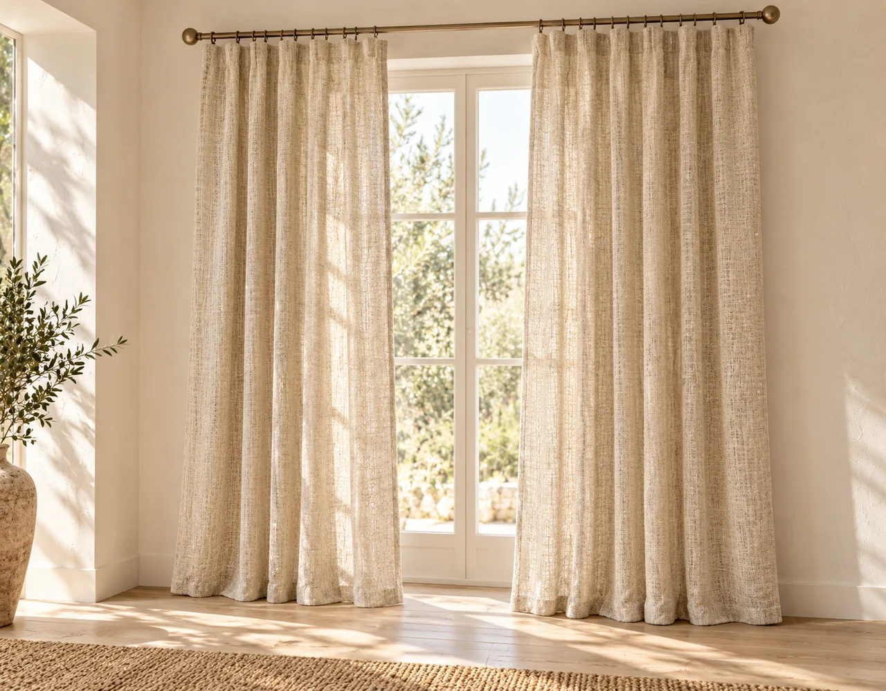
Curtains & drapery
Curtains & drapery
Curtain sourcing depends on precise finished measurements and heading construction as much as fabric appearance. Define window coverage, panel count and desired drape early so suppliers quote like-for-like specifications.
Materials to discuss
Fabric composition, weight, lining and heading tape or hardware.
Range & customisation
Panel sizes, heading style, colour, lining and packing.
Sample review
Check finished length, panel matching, straight hems and agreed light or wash requirements.
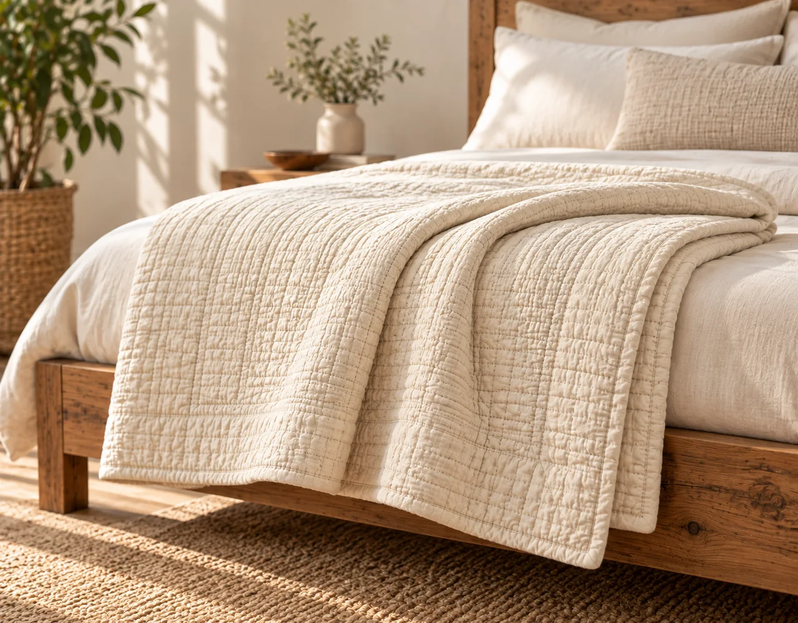
Quilts & bedspreads
Quilts & bedspreads
Layered quilts and bedspreads offer a coordinated bedroom direction. Set finished dimensions, fabric and fill requirements with an approved construction reference, then assess sample texture, quilting and care needs.
Materials to discuss
Outer fabric, backing, filling and quilting construction.
Range & customisation
Bed sizes, stitch pattern, edging, reversible colours and set contents.
Sample review
Review dimensions, fill distribution, quilt stitching, edges and agreed wash results.
Quality checkpoints to discuss
Dimensions, colour consistency, seam construction and buyer-specified wash testing.
Build your home textiles & furnishings sourcing brief
Share references, specifications, quantity and destination market. We can discuss supplier options, sample development, pricing and timelines for your brief.
Metal vases, candleholders and decorative lanterns suit contemporary and antique-style home collections. The reference sample should establish the base material and finish, including the amount of variation acceptable in a handcrafted appearance.
Materials to discuss
Brass, iron, aluminium or other agreed metal.
Range & customisation
Shape, surface texture, plating, patina-style finish and packing.
Sample review
Review coating consistency, sharp edges, stability, joints and protection in transit.
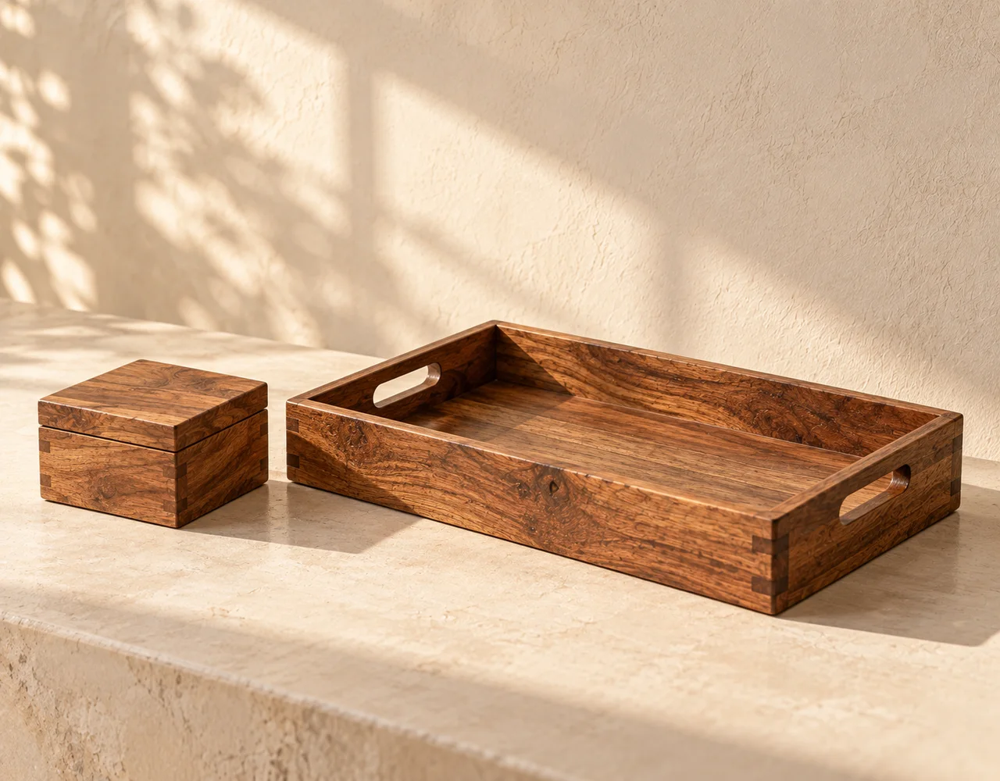
Wooden trays & boxes
Wooden trays & boxes
Wooden trays and storage boxes combine a warm material story with practical everyday use. Agree the wood species and construction rather than relying on colour alone; handles, lids and corners need particular attention at sample stage.
Materials to discuss
Specified wood species, solid or engineered construction and finish.
Range & customisation
Dimensions, compartments, handles, lid fittings and engraving.
Sample review
Check joinery, smoothness, lid fit, base flatness and protective packing.
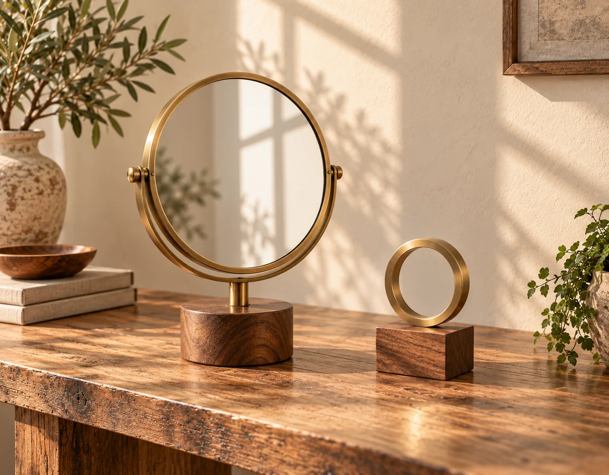
Mixed-material accents
Mixed-material accents
Wood-and-metal mirrors, decorative stands and mixed-material accents can unify a home-accessories collection. Successful sourcing starts with clear interfaces between components and a stable, repeatable assembly.
Materials to discuss
Wood, metal, glass or other agreed components.
Range & customisation
Proportions, finish combinations, fittings and assembly method.
Sample review
Review component fit, stability, glass protection where relevant and movement during handling.
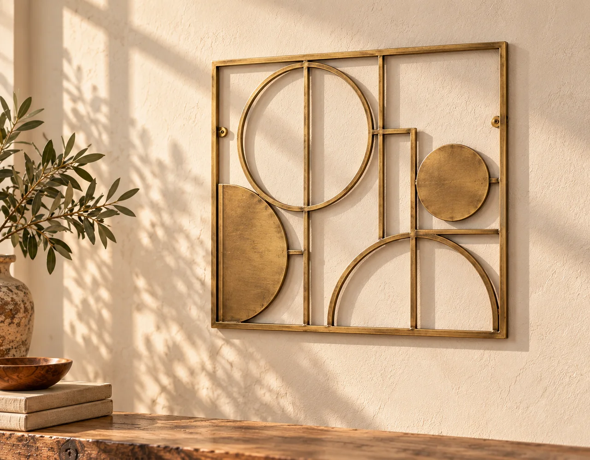
Decorative wall art
Decorative wall art
Decorative wall pieces can combine texture, shape and finish within a home collection. Confirm dimensions and the hanging method in the brief, then review supplied samples for appearance, assembly and packing protection.
Materials to discuss
Wood, metal, textile or other proposed construction and finish.
Range & customisation
Size, colour palette, mounting layout and protective packaging.
Photo frames support coordinated home and gifting ranges in a compact format. Start with the exact image and outer dimensions, then align frame finish, backing and display options before sample approval.
Materials to discuss
Wood or metal frame, glazing or clear insert, backing and hardware.
Range & customisation
Image sizes, profile, colour, tabletop or wall display and packing.
Sample review
Review image fit, corners, back closure, stand stability and glazing protection.
Quality checkpoints to discuss
Finish uniformity, sharp edges, assembly, stability and transit protection. Antique-style is a new decorative finish, not an antique-authenticity claim.
Build your home décor & handicrafts sourcing brief
Share references, specifications, quantity and destination market. We can discuss supplier options, sample development, pricing and timelines for your brief.
From relaxed day dresses to more structured silhouettes, a dress brief should connect fabric, fit and finishing. We can help organise supplier discussion around a reference garment, measurement chart and intended collection.
Materials to discuss
Cotton, linen, blends or other fabrics, subject to confirmation.
Range & customisation
Silhouette, sleeve style, length, lining, closures and graded sizes.
Sample review
Review fit against the size chart, seam finish, drape, closures and agreed wash results.
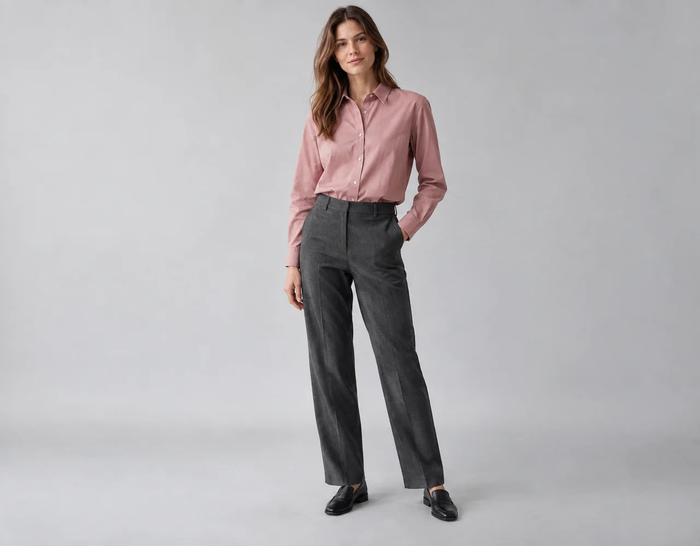
Women's blouses & tops
Women's blouses & tops
Blouses and tops can be developed as standalone styles or coordinated pieces. Define neckline, sleeve shape and fit with measurable references, then align fabric opacity, trims and care expectations before sample approval.
Materials to discuss
Proposed fabric composition, weight, interfacing and trims.
Range & customisation
Neckline, cuffs, sleeve length, fastening, colour palette and labels.
Sample review
Check seam alignment, button spacing, fabric appearance, fit and care requirements.
Shirts & casualwear
Shirts & casualwear
Cotton and linen shirts, relaxed tops and casualwear can be developed around a buyer-approved fit and fabric reference. Use a measurement specification and graded size chart to make sample feedback useful for bulk production.
Materials to discuss
Fibre composition, fabric weight, weave and trims.
Range & customisation
Fit, size range, colours, button details, labels and packing.
Co-ordinated tops and bottoms require consistent fabric and shade as well as separate fit approval. A clear set brief identifies both pieces, their measurements and how they will be labelled and packed for retail.
Materials to discuss
Matched fabric references, composition and lining where relevant.
Range & customisation
Top and bottom styles, size combinations, trims and set packaging.
Sample review
Review shade matching, fit of both pieces, seam finish and complete set contents.
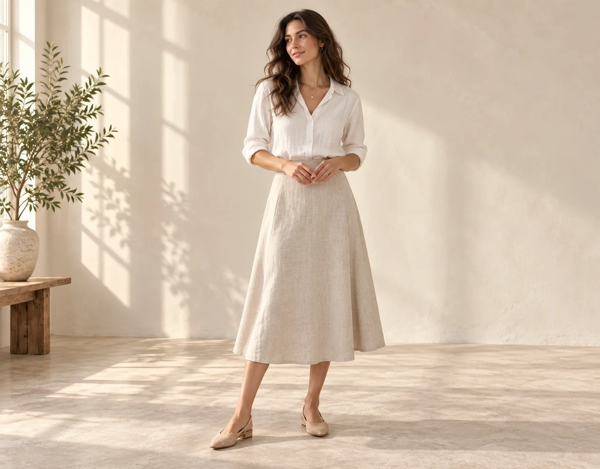
Women's skirts
Women's skirts
Skirts bring additional silhouettes to an apparel collection without treating every colour as a separate product. Specify length, waist construction and fullness, then compare samples for drape, finishing and the agreed measurement tolerance.
Materials to discuss
Fabric composition, weight, lining and fastening materials.
Range & customisation
A-line or other shape, waistband, pockets, hem, sizes and labels.
Sample review
Check waist fit, closure operation, hem level, lining coverage and agreed wash testing.
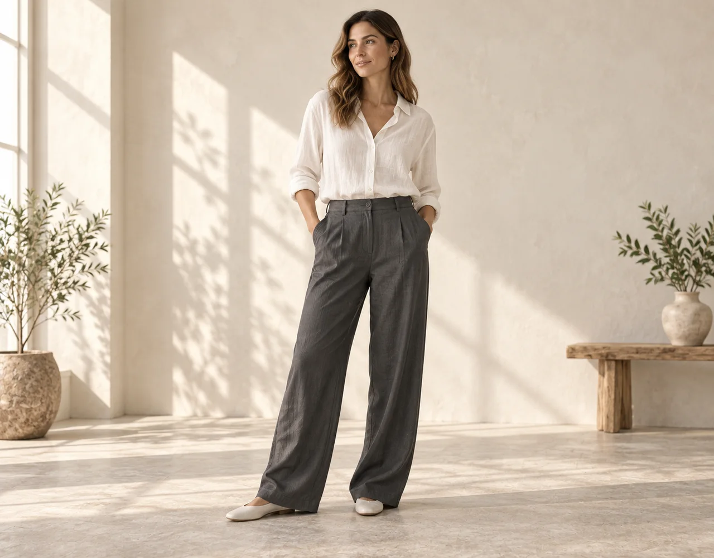
Women's trousers
Women's trousers
Trouser sourcing starts with a precise fit and construction brief: rise, waist, inseam and leg shape all affect the finished result. We can support sample coordination and workmanship review before production requirements are confirmed.
Materials to discuss
Fabric composition and weight, pocketing, interfacing and trims.
Range & customisation
Leg shape, rise, waistband, pockets, closures and graded size chart.
Sample review
Review fit measurements, seam strength, pocket finish, zip operation and fabric recovery.
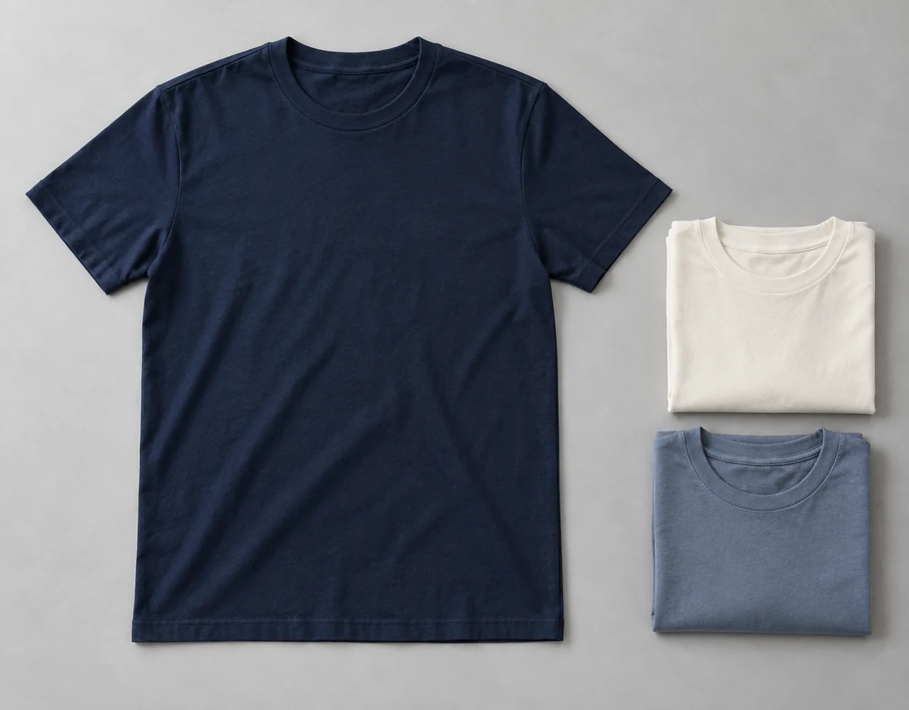
Cotton basics
Cotton basics
T-shirts and everyday cotton essentials depend on consistent fit, fabric handle and finishing. Clarify whether the brief is for a basic retail range, promotional programme or private-label collection before comparing supplier proposals.
Materials to discuss
Knit structure, composition, weight and finishing requirements.
Range & customisation
Neck shape, sleeve length, size grading, print and labelling.
Cotton aprons and general-use workwear suit hospitality, retail and practical lifestyle ranges. Match pocket layout, coverage and fastening details to the intended use; specialist protective performance needs a separate technical brief.
Materials to discuss
Cotton or agreed blend, fabric weight and strap construction.
Range & customisation
Pocket positions, adjustable ties, coverage, colour and embroidery.
Sample review
Check reinforcement at stress points, fit, closures, seam finishing and care labels.
Quality checkpoints to discuss
Measurements, seam quality, trim attachment and buyer-specified fabric or wash testing.
Build your garments & cotton apparel sourcing brief
Share references, specifications, quantity and destination market. We can discuss supplier options, sample development, pricing and timelines for your brief.
Leather sandals can support resort, casual and lifestyle footwear ranges. Start with an approved last or fit reference, then align strap layout, footbed comfort and outsole construction across the proposed size range.
Materials to discuss
Upper leather, lining, footbed and outsole materials.
Range & customisation
Size grading, strap pattern, buckle finish, colours and branding.
Casual leather shoes require a detailed construction brief beyond the overall style. Supplier comparison is clearer when the upper, lining, last, sole and size grading are specified together with the approved sample.
Materials to discuss
Upper and lining materials, outsole and construction method.
Range & customisation
Toe profile, size range, laces, colours and presentation box.
Sample review
Review pair matching, size consistency, seams, sole attachment and finish.
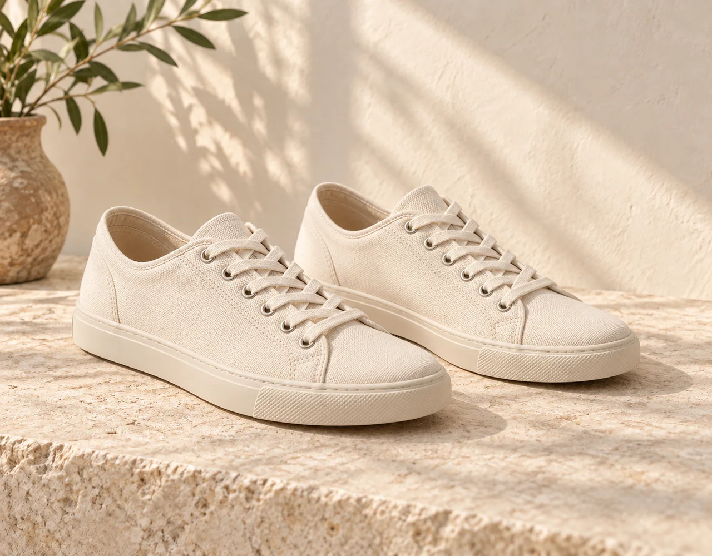
Textile footwear
Textile footwear
Canvas and other textile footwear can suit everyday or seasonal collections. Define the intended wearer and use, then assess samples for fit, fabric construction and the interface between the upper and sole.
Materials to discuss
Fabric composition, lining, reinforcement and sole material.
Range & customisation
Silhouette, fastening, colour, print, labels and size range.
Sample review
Check seam finishing, eyelets or closures, pair matching and agreed performance testing.
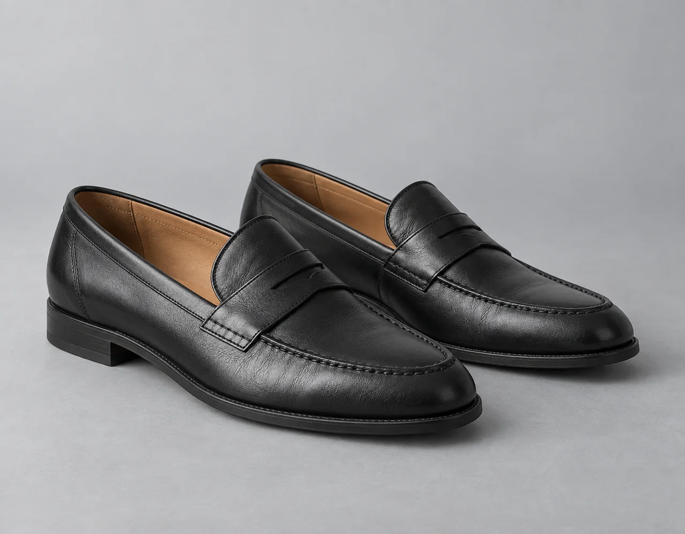
Leather loafers
Leather loafers
Loafers add a closed-shoe direction for footwear collections. Define the last, size grading and material references before comparing samples, with fit approval and construction checks suited to the intended customer and market.
Materials to discuss
Upper material, lining, insole and outsole construction.
Range & customisation
Last shape, sizes, sole profile, stitch detail and packing.
Sample review
Review pair matching, fit, sole attachment, edges and agreed wear or bond tests.
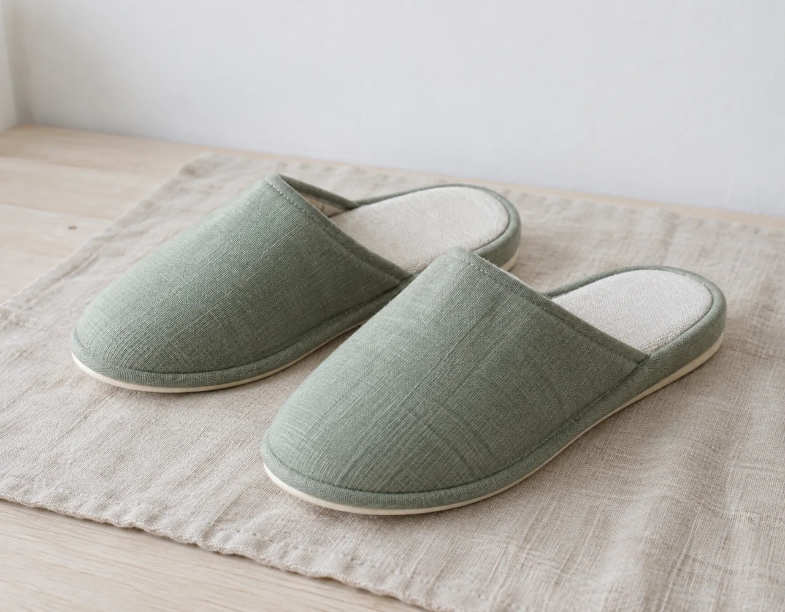
Indoor slippers
Indoor slippers
Indoor slippers can be developed for homewear, hospitality and gifting ranges. Begin with the intended indoor use and sizing, then align upper fabric, cushioning and outsole construction with a sample-review brief.
Materials to discuss
Textile or leather upper, lining, cushioning and sole.
Range & customisation
Open or closed shape, size range, colour, trims and packaging.
Sample review
Check fit, pair consistency, lining finish and sole attachment; scope slip testing if required.
Share references, specifications, quantity and destination market. We can discuss supplier options, sample development, pricing and timelines for your brief.
Canvas shoppers and woven totes bring tactile materials to lifestyle and accessories ranges. Specify the bag body and handle attachment together so an attractive sample also matches the intended capacity and everyday use.
Materials to discuss
Canvas weight or agreed woven fibre, lining and trims.
Range & customisation
Dimensions, gusset, handles, closure, colour and branding.
Sample review
Review shape, seams, handle reinforcement, lining fit and trim security.
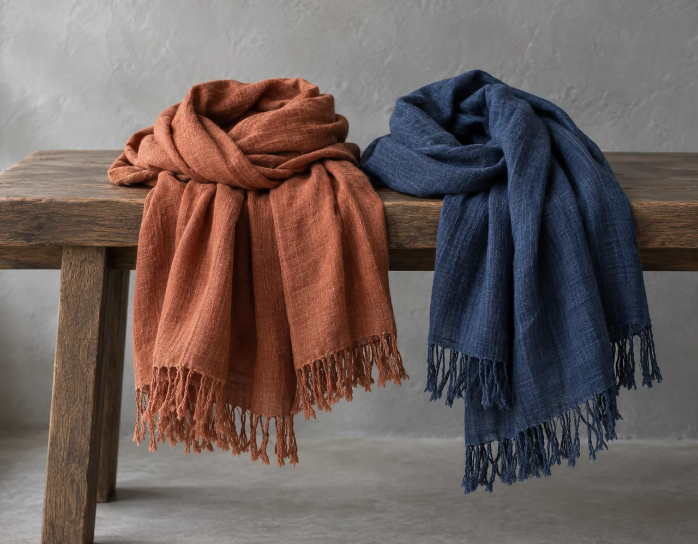
Scarves & wraps
Scarves & wraps
Scarves and wraps can introduce colour, print and texture without a large assortment of shapes. Give suppliers a defined composition, hand-feel reference and artwork or weave brief, with clear tolerances for shade and dimensions.
Materials to discuss
Cotton, linen or other agreed fibre and construction.
Range & customisation
Size, print or weave, colourways, fringe and retail folding.
Sample review
Check edge finish, pattern alignment, shade matching and care declarations.
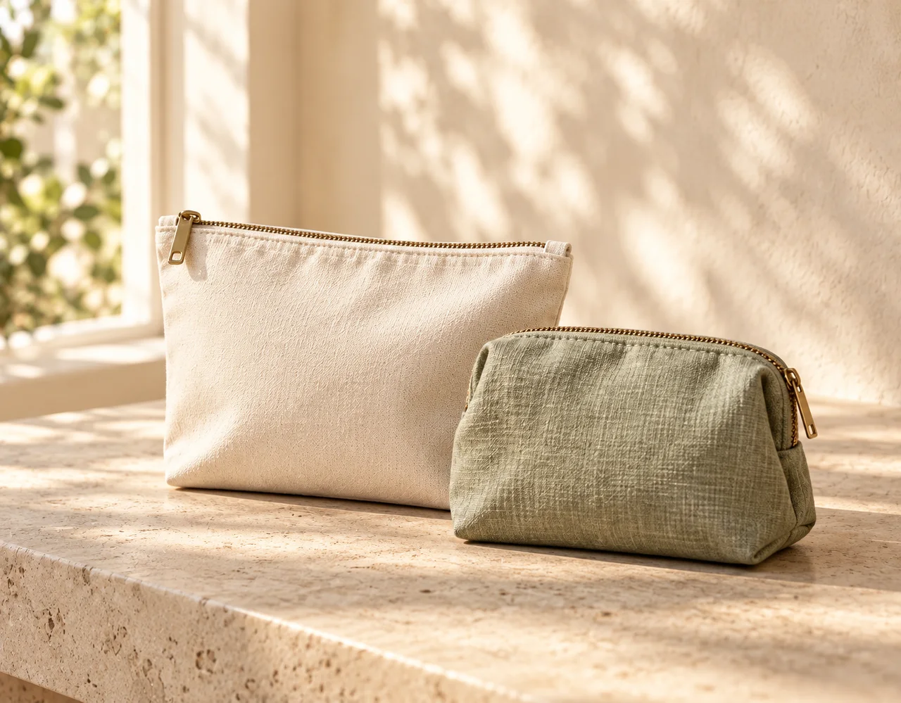
Pouches & accessories
Pouches & accessories
Zip pouches and small accessories can extend a bag collection into travel, gifting or everyday organisation. Establish internal capacity and closure requirements so the design remains practical as well as visually coordinated.
Materials to discuss
Outer fabric, lining, interlining and zip or hardware.
Range & customisation
Compartments, dimensions, puller, print, embroidery and labels.
Sample review
Review zip travel, seam finish, lining fit, hardware attachment and packing.
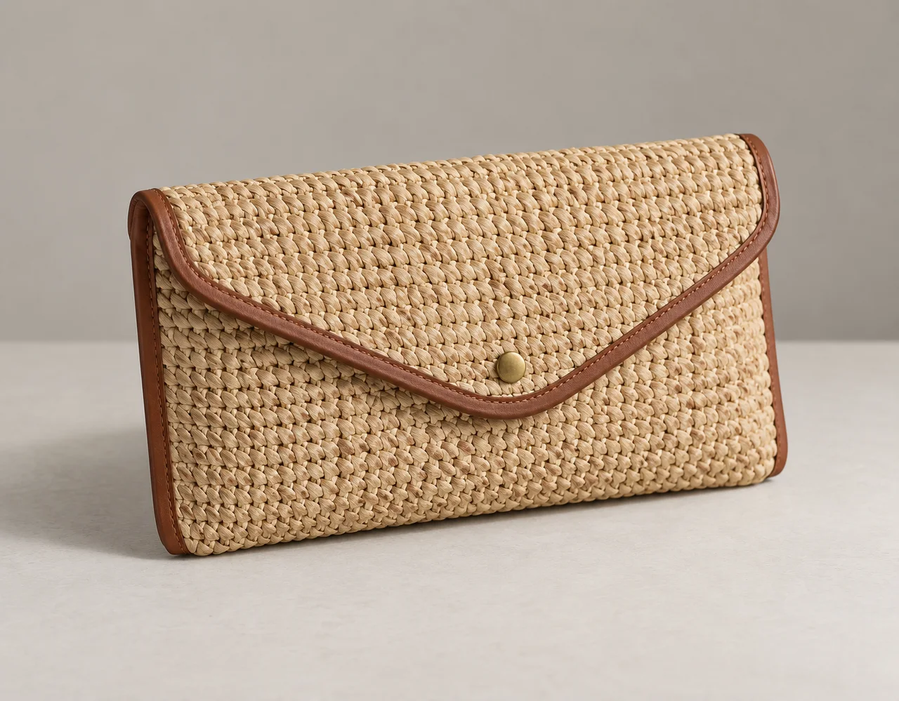
Woven clutches
Woven clutches
Compact woven clutches bring a distinct evening and resort-accessory silhouette. Define usable interior space, weave appearance and opening construction, then review samples for the balance of texture, finish and practical access.
Materials to discuss
Proposed woven fibre, lining, frame and closure.
Range & customisation
Shape, dimensions, weave, removable strap and presentation packing.
Sample review
Check closure operation, lining attachment, weave consistency and edges.
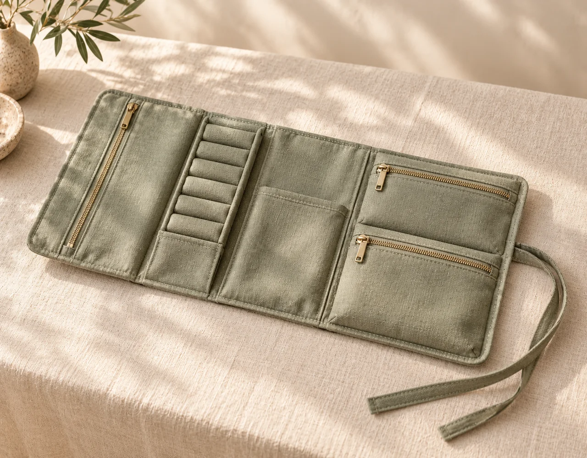
Jewellery rolls & organisers
Jewellery rolls & organisers
Travel jewellery rolls can be developed for gifting or coordinated accessories ranges. Work from the jewellery types they need to hold, with separate pockets and closures specified to reduce confusion during sample review.
Materials to discuss
Outer textile or leather, lining, padding and fastening.
Range & customisation
Pocket layout, ring holders, dimensions, ties and personalised details.
Sample review
Review compartment access, closure function, lining finish and construction consistency.
Quality checkpoints to discuss
Measurements, shade matching, trim security, workmanship and material declarations.
Build your fashion accessories & bags sourcing brief
Share references, specifications, quantity and destination market. We can discuss supplier options, sample development, pricing and timelines for your brief.
Woven rugs offer a strong texture-led foundation for an interiors collection. Compare suppliers against an agreed fibre, construction and colour reference, with finished dimensions and acceptable handmade variation clearly recorded.
Materials to discuss
Fibre composition, flatweave or pile and backing if required.
Range & customisation
Sizes, pattern, colour palette, fringe and edge binding.
Cotton dhurries suit relaxed interiors, layered styling and compact retail collections. Define the design repeat and finished weight so the approved sample provides a useful reference for colour and construction.
Materials to discuss
Cotton composition, yarn, weave density and finished weight.
Range & customisation
Stripes, geometric patterns, dimensions, fringe and labels.
Jute and other natural-fibre rugs provide an organic material direction for home collections. The sourcing brief should address texture, intended placement and backing rather than assuming every natural fibre suits every setting.
Materials to discuss
Declared fibre composition, weave and backing.
Range & customisation
Shape, sizes, border treatment, colour and rolled packing.
Sample review
Review surface consistency, edges, dimensions, care advice and intended-use suitability.
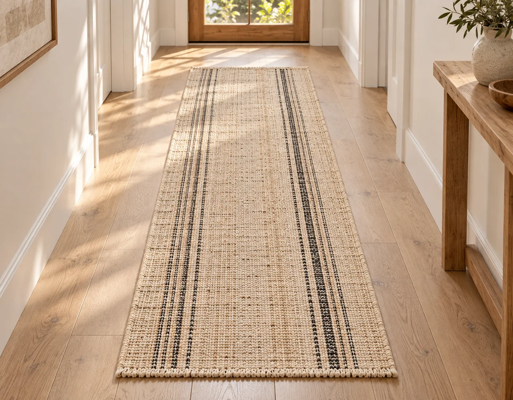
Rug runners
Rug runners
Runners adapt rug collections to hallways and narrower spaces. A clear brief defines finished width, length and edge construction, with supplier samples reviewed against agreed texture, colour and dimensional requirements.
Materials to discuss
Yarn or fibre composition, weave, pile and backing if applicable.
Range & customisation
Dimensions, pattern, border, fringe and rolled packing.
Sample review
Check straightness, width consistency, edges, shade and agreed dimensional stability.
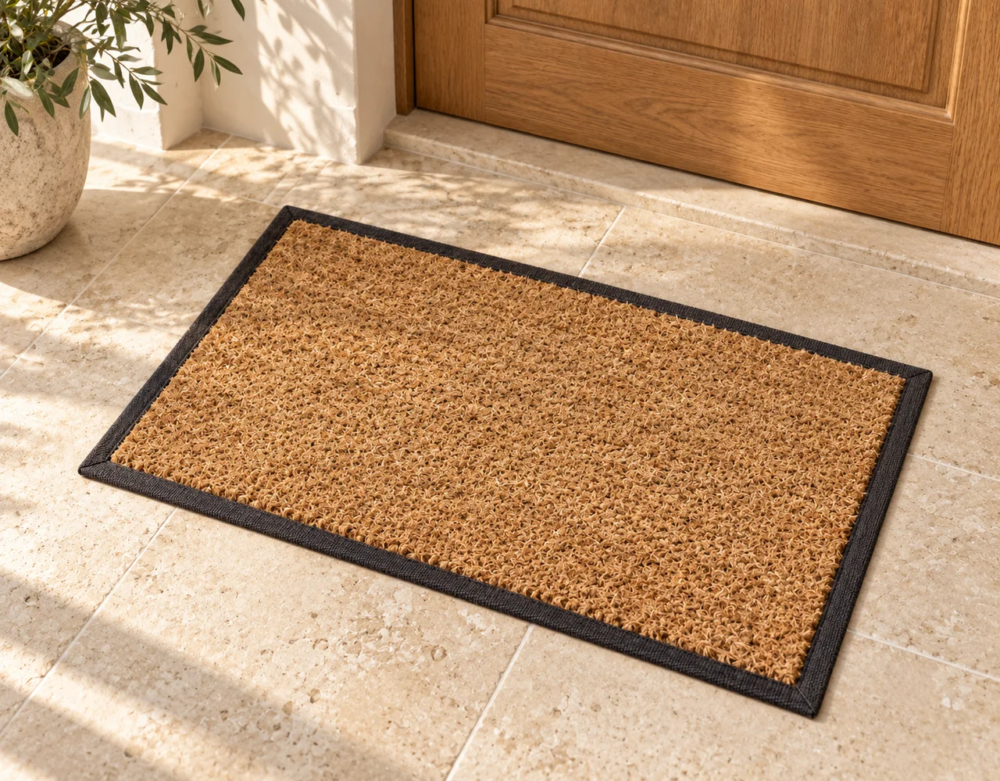
Entrance mats
Entrance mats
Entrance mats need a defined use environment and backing specification, not only a decorative surface. Discuss fibre, dimensions and maintenance expectations before comparing samples; functional claims require separately agreed evidence.
Materials to discuss
Coir or other proposed fibres, backing and binding.
Range & customisation
Size, surface pattern, thickness, edging and retail packing.
Sample review
Review edge finish, fibre shedding and backing; scope slip or outdoor-use checks separately.
Share references, specifications, quantity and destination market. We can discuss supplier options, sample development, pricing and timelines for your brief.
Accent chairs and stools can anchor a small-furniture range with wood, cane or upholstered details. Specify intended use, dimensions and joinery, then review a complete assembled sample before developing the wider assortment.
Materials to discuss
Wood species, seating material, finish and fittings.
Range & customisation
Seat height, proportions, upholstery or cane details and colour.
Sample review
Review stability, joints, surface finish and separately agreed load testing.
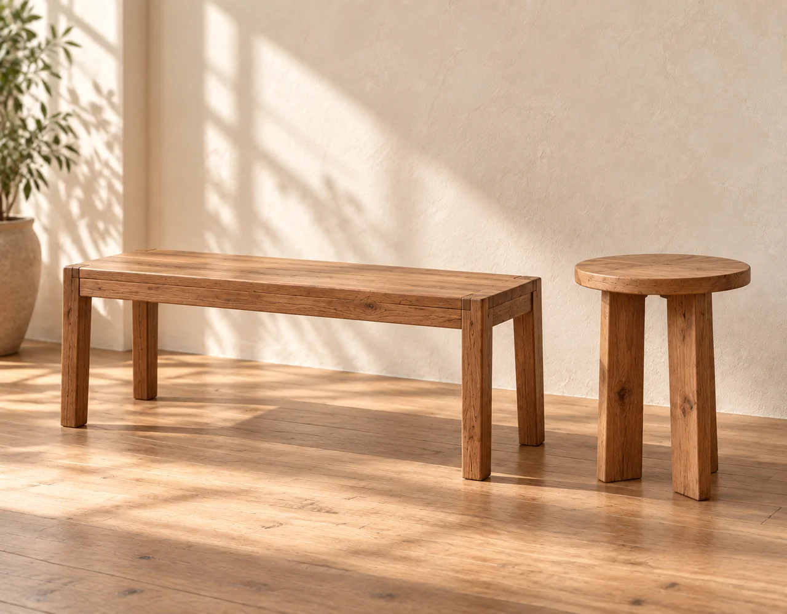
Side tables & benches
Side tables & benches
Side tables and benches work well as coordinated accent pieces or standalone designs. Compare suppliers using the same dimensioned drawing and assembly brief, including the packing approach for export transit.
Materials to discuss
Wood or agreed mixed materials, finish and hardware.
Range & customisation
Dimensions, leg design, knock-down assembly and finish palette.
Sample review
Check levelness, stability, assembly fit, exposed edges and packing protection.
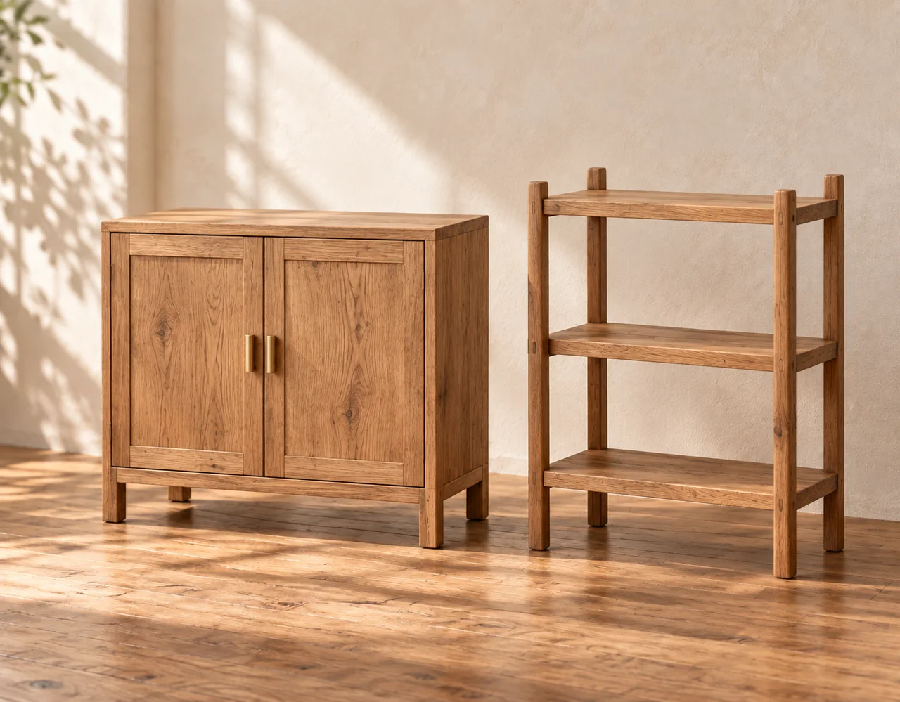
Shelves & small cabinets
Shelves & small cabinets
Small cabinets and shelves bring storage function to a decorative furniture collection. Clear tolerances for doors, drawers and hardware help translate the approved sample into a repeatable production specification.
Materials to discuss
Solid or engineered wood, back panels, finish and fittings.
Range & customisation
Shelf spacing, handles, door layout and assembled or flat-pack format.
Sample review
Review alignment, opening action, fittings and separately agreed safety or strength checks.
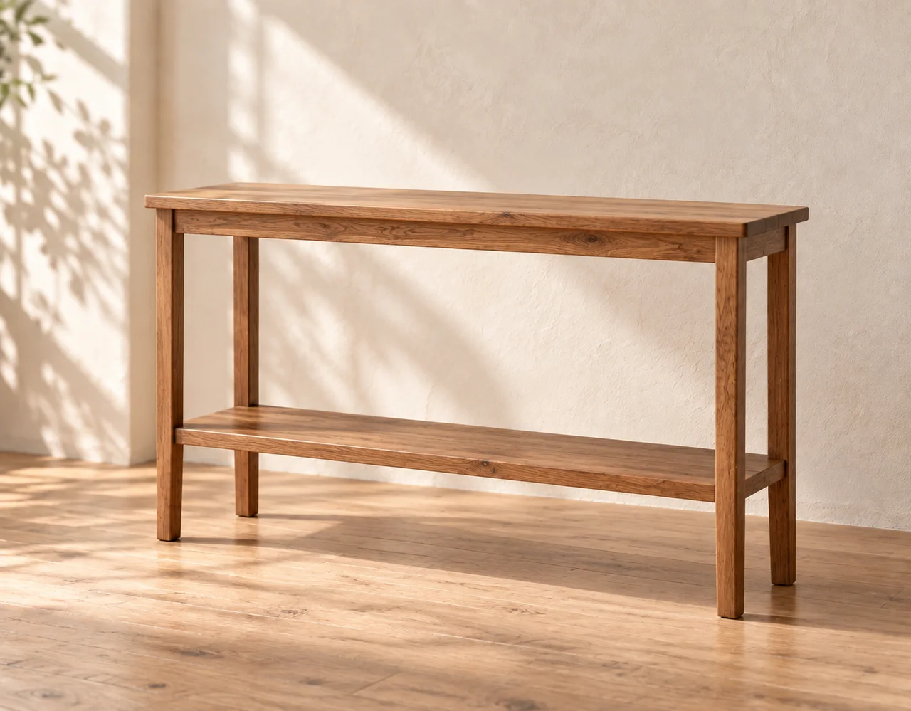
Console tables
Console tables
Console tables add a larger accent-furniture direction to the collection. Supplier discussion should establish overall dimensions, construction and finish references, with assembly and performance requirements confirmed before production approval.
Materials to discuss
Timber or other proposed material, metal components and finish.
Range & customisation
Dimensions, shelf or drawer layout, assembly method and packaging.
Sample review
Review joints, surface finish and assembly; separately scope stability and load testing.
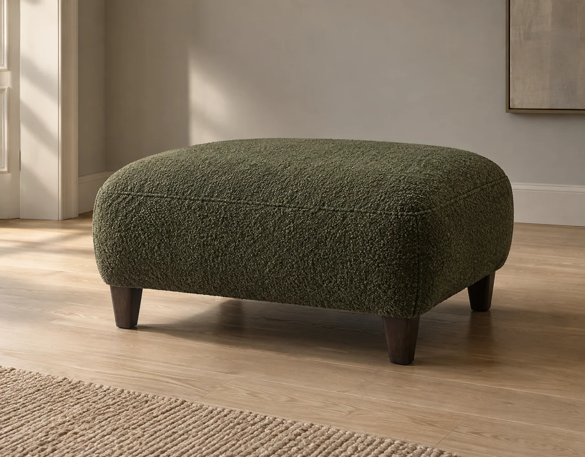
Ottomans & footstools
Ottomans & footstools
Upholstered ottomans combine furniture construction with textile finish. Define dimensions, support and upholstery references together, with sample review covering seams, padding and the intended seating or footrest use.
Materials to discuss
Frame, upholstery fabric, padding and feet.
Range & customisation
Shape, size, fabric palette, trim and assembled or flat-pack format.
Sample review
Review upholstery fit, seam finish and assembly; agree strength and stability tests separately.
Quality checkpoints to discuss
Dimensions, surface finish, stability, hardware and separately agreed strength testing.
Build your furniture & accent pieces sourcing brief
Share references, specifications, quantity and destination market. We can discuss supplier options, sample development, pricing and timelines for your brief.
Decorative lanterns can be sourced as tabletop, floor or hanging accents. Establish whether the design is ornamental, candle-use or electrical before quoting: each use introduces different construction and safety requirements.
Materials to discuss
Metal, glazing, finish and handle materials.
Range & customisation
Dimensions, shape, decorative finish and intended light source.
Sample review
Review edges, glazing retention, stability, handle attachment and protective packing.
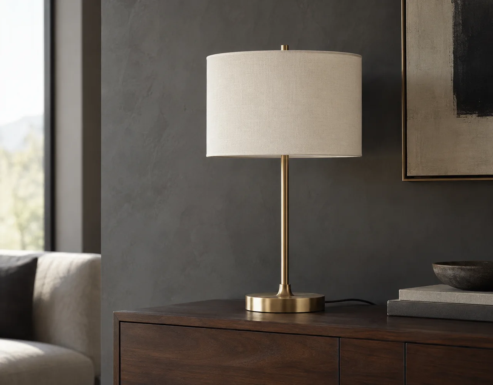
Table & pendant lighting
Table & pendant lighting
Table lamps and pendants can create a coordinated interiors story through shades, bases and finishes. Electrical specifications and destination-market requirements must be confirmed separately before accepting a supplier or sample.
Materials to discuss
Base and shade materials; electrical components to technical brief.
Range & customisation
Dimensions, shade shape, finish, cord arrangement and fittings.
Sample review
Review assembly and finish; electrical safety, certification and testing need a separately agreed scope.
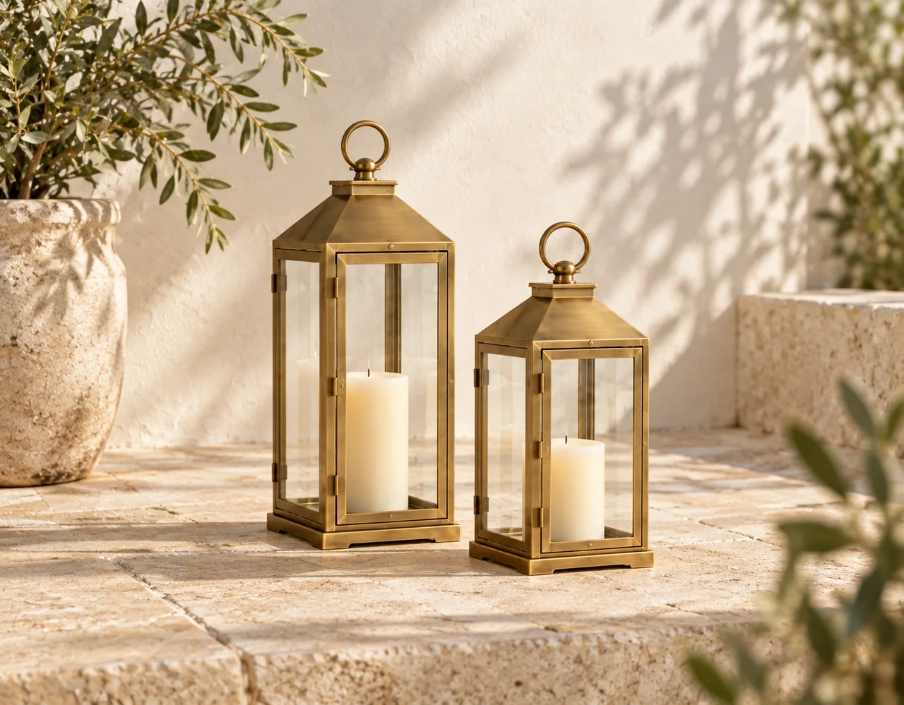
Outdoor decorative lighting
Outdoor decorative lighting
Outdoor decorative lighting requires an exposure-specific brief, not just an attractive exterior finish. Confirm whether the product is a non-electrical lantern or an electrical fitting, and define the intended installation and environment.
Materials to discuss
Housing, glazing, coating and any electrical components.
Range & customisation
Mounting, dimensions, finish and intended exposure conditions.
Sample review
Review assembly and packing; weather and electrical claims require appropriate evidence and specialist testing.
Floor lamps
Floor lamps
Floor lamps require a complete specification covering structure as well as electrical components. We can support supplier coordination and appearance review, while destination-market electrical compliance must be agreed and verified separately.
Materials to discuss
Base and stem materials, shade construction and electrical components.
Range & customisation
Height, shade size, finish, cable route and packing.
Sample review
Review alignment, finish and assembly; scope stability, electrical testing and compliance separately.
Wall lights & sconces
Wall lights & sconces
Wall lights introduce a compact architectural direction for interiors collections. Confirm installation format and component specifications at the brief stage; imagery represents design inspiration, not an electrically approved product.
Materials to discuss
Fixture material, finish, shade or diffuser and electrical components.
Range & customisation
Dimensions, mounting, orientation, finish and component configuration.
Sample review
Check finish and assembly; separately verify mounting, wiring and market compliance requirements.
Quality checkpoints to discuss
Assembly, edges, finish and packing. Electrical safety, certification and specialist testing must be separately confirmed.
Build your lighting & decorative lanterns sourcing brief
Share references, specifications, quantity and destination market. We can discuss supplier options, sample development, pricing and timelines for your brief.
Ceramic mugs, bowls and plates can be developed into a cohesive tabletop collection. Agree the body, glaze and intended food-contact use, with a physical sample for shape, colour and acceptable surface variation.
Materials to discuss
Ceramic body, glaze system and intended use.
Range & customisation
Shapes, capacities, dimensions, glaze colours and set composition.
Sample review
Check chips, rims, dimensions and packing; food-contact requirements need suitable evidence and agreed testing.
Wooden serving pieces
Wooden serving pieces
Wooden serving boards, bowls and trays bring natural texture to dining and gifting collections. Define the wood species, finish and care instructions, especially when the item is intended to contact food.
Materials to discuss
Wood species, construction, surface treatment and finish.
Range & customisation
Shape, thickness, handles, engraving and presentation packing.
Sample review
Review smoothness, joints and stability; confirm food-contact documentation and any required testing.
Metal kitchen accessories
Metal kitchen accessories
Metal serving accessories and kitchen pieces need a clear specification for the material, finish and end use. Decorative presentation pieces and food-contact utensils should not share an undefined compliance brief.
Materials to discuss
Specified metal grade, coating and component construction.
Range & customisation
Dimensions, surface finish, handles, set contents and packing.
Sample review
Check edges, joints and workmanship; food-contact and corrosion claims require appropriate verification.
Cutlery sets
Cutlery sets
Coordinated cutlery sets can be specified by piece count, profile and finish. Align the material declaration and intended food-contact use before sampling, with compliance and durability evidence scoped for the destination market.
Materials to discuss
Metal grade, surface finish and handle construction.
Range & customisation
Set contents, piece dimensions, finish and presentation packaging.
Sample review
Review edges, consistency and finish; agree food-contact and corrosion testing separately.
Drinking glasses & glassware
Drinking glasses & glassware
Glassware brings a distinct material direction to dining collections. Define capacity, dimensions and finish references so supplier proposals are comparable; food-contact suitability and thermal-use claims require separate validation.
Materials to discuss
Proposed glass composition, manufacturing method and decoration.
Range & customisation
Capacity, rim profile, colour, set contents and protective packing.
Sample review
Check rim finish, bubbles or inclusions, capacity and packing; scope applicable tests separately.
Quality checkpoints to discuss
Finish, dimensions, chipped edges and packing. Food-contact compliance needs suitable documentation and separately agreed testing.
Share references, specifications, quantity and destination market. We can discuss supplier options, sample development, pricing and timelines for your brief.
Soap dispensers and tumblers can establish a coordinated bathroom range through colour, texture and proportions. The sourcing brief should cover pump fittings and usable capacity as carefully as the decorative finish.
Materials to discuss
Ceramic, glass, resin or other agreed body; pump components.
Range & customisation
Capacity, dimensions, finish, pump colour and set composition.
Sample review
Review pump action, thread fit, stability and agreed leakage checks.
Trays & soap dishes
Trays & soap dishes
Bathroom trays and soap dishes create useful companion pieces for a countertop collection. Specify drainage and surface treatment so the design suits the proposed use and can be matched consistently with other accessories.
Materials to discuss
Body material, surface finish and underside treatment.
Range & customisation
Dimensions, drainage grooves, colour and matching-set details.
Sample review
Check edges, levelness, drainage, finish consistency and protection against breakage.
Storage & textile accessories
Storage & textile accessories
Storage baskets, organisers and bathroom textiles can broaden a coordinated accessories range. Set material and care requirements according to likely moisture exposure, rather than assuming a decorative fabric or basket is suitable.
Materials to discuss
Basket fibre or fabric composition, lining and reinforcement.
Range & customisation
Sizes, compartments, handles, closure and colour palette.
Sample review
Review seams or weave, trim attachment, care advice and intended-use suitability.
Laundry hampers
Laundry hampers
Laundry hampers combine useful capacity with a coordinated bathroom or bedroom finish. Specify the intended contents, footprint and access, then compare weave, frame and liner construction against an approved sample.
Materials to discuss
Woven fibre or other structure, frame and removable liner.
Range & customisation
Dimensions, lid, handles, liner style and nested packing.
Sample review
Review usable capacity, joins, weave edges, lid operation and liner removal.
Bath mats
Bath mats
Bath mats add a textile direction to bathroom collections. Define size, fibre and finished weight with care expectations, while any non-slip, absorbency or quick-drying claims need an agreed test method and evidence.
Materials to discuss
Fibre composition, pile or weave and backing if applicable.
Range & customisation
Dimensions, colour, border, weight and retail labels.
Sample review
Check dimensions, pile consistency and edges; agree wash, absorbency and slip testing as required.
Quality checkpoints to discuss
Pump function, fit, leakage checks where agreed, edges, finish and packing.
Share references, specifications, quantity and destination market. We can discuss supplier options, sample development, pricing and timelines for your brief.
Planters and pots can build a collection around terracotta, ceramic or other agreed materials. Establish the intended indoor or outdoor setting first, then specify drainage, dimensions and the finish reference.
Materials to discuss
Body material, wall construction, glaze or coating.
Range & customisation
Sizes, shapes, drainage holes, saucers and colour.
Sample review
Check rims, stability, drainage and packing; exposure claims need suitable verification.
Garden accessories
Garden accessories
Watering cans and garden accessories can combine practical use with a considered decorative finish. State the intended function and exposure conditions so suppliers propose suitable materials, joints and coatings.
Materials to discuss
Agreed metal or other material, joints and surface treatment.
Range & customisation
Capacity, handle shape, spout, finish and packing.
Sample review
Review balance, edges, attachments and agreed function or leakage checks.
Outdoor soft furnishings
Outdoor soft furnishings
Outdoor cushions and other sewn furnishings need a use-specific fabric and care brief. An appealing fabric photograph does not establish weather performance: confirm any resistance or durability claims with suitable evidence.
Materials to discuss
Fabric composition, filling if included, thread and closures.
Range & customisation
Sizes, removable covers, piping, colour and labels.
Sample review
Review dimensions, seams and zip action; weather-related testing is separately agreed.
Decorative bird feeders
Decorative bird feeders
Bird feeders can extend garden-accessory ranges with a practical outdoor item. Define the intended feed, access and mounting method, then review construction and cleaning access rather than relying on decorative appearance alone.
Materials to discuss
Proposed wood or metal, outdoor finish and hanging hardware.
Range & customisation
Dimensions, feed compartment, openings, mount and packing.
Sample review
Check edges, assembly and cleaning access; agree weather and intended-use requirements separately.
Decorative garden stakes
Decorative garden stakes
Decorative garden stakes provide small-scale accents for outdoor collections. Specify dimensions, stem construction and finish before sampling, with protective packing and handling requirements appropriate to the pointed component.
Materials to discuss
Metal or other proposed decorative material, stem and finish.
Range & customisation
Motif, height, finish palette, assembly and protected-tip packaging.
Sample review
Review attachment, edges, coating and packing; scope weather durability separately.
Quality checkpoints to discuss
Drainage, stability, construction and packing; weather-resistance claims require appropriate verification.
Share references, specifications, quantity and destination market. We can discuss supplier options, sample development, pricing and timelines for your brief.
Journals and stationery can be developed as a cohesive gifting or private-label collection. Paper, binding and cover construction should be specified together, with a print reference where branding or artwork is required.
Materials to discuss
Paper weight, cover material, board and binding method.
Range & customisation
Page count, size, ruling, colour, embossing and retail sleeve.
Sample review
Review binding, page alignment, cover finish and print consistency.
Gift packaging
Gift packaging
Rigid gift boxes, folding cartons and presentation packaging can complete a sourcing programme. Start with the product dimensions and protection needs, then align appearance with an appropriate board and insert construction.
Materials to discuss
Board type and weight, wrapping paper, inserts and closures.
Range & customisation
Dimensions, print, foil or embossing, ribbons and flat-pack format.
Sample review
Review fit, folds, alignment, closure action and transit protection.
Festive décor
Festive décor
Festive ornaments and decorative accents can support seasonal gifting collections. Establish materials, hanging attachments and packing at sample stage, and distinguish decorative items from children's toys or electrical products.
Materials to discuss
Paper, wood, textile or other agreed decorative materials.
Range & customisation
Shapes, colours, attachments, finish and assortment packing.
Sample review
Check trim security, edges, finish and labelling; specialist safety requirements need separate review.
Desk organisers
Desk organisers
Desk organisers can be developed for workspace, gifting and lifestyle ranges. Begin with the stationery or devices they need to accommodate, then agree compartment dimensions, material finish and presentation packing.
Materials to discuss
Wood, metal or other proposed material, lining and finish.
Range & customisation
Compartment layout, dimensions, colour, engraving and gift packaging.
Sample review
Check usable fit, compartment alignment, surface finish and stable placement.
Greeting-card sets
Greeting-card sets
Greeting-card sets offer a paper-based direction for stationery and gift collections. Define card size, print or embossing references and envelope contents, then compare supplier proofs and physical samples before bulk production.
Materials to discuss
Paper weight, texture, print process and envelope stock.
Range & customisation
Card designs, blank or printed interiors, set quantity and box format.
Sample review
Review registration, colour, folds, envelope fit and complete set packing.
Quality checkpoints to discuss
Print alignment, binding, dimensions, trim security and retail packing. No children's-toy scope implied.
Build your gifts, stationery & festive décor sourcing brief
Share references, specifications, quantity and destination market. We can discuss supplier options, sample development, pricing and timelines for your brief.
Dog and cat apparel requires product-specific fit rather than a generic small-to-large label. Use chest, neck and back measurements with a defined fastening design; intended animal use and suitability need a separate review.
Materials to discuss
Fabric composition, lining where needed, trims and closures.
Range & customisation
Size grading, coverage, seasonal weight, colour and labels.
Sample review
Review measurements, seams, trim attachment and closure operation against the approved sample.
Pet harnesses
Pet harnesses
Harness sourcing needs a construction and fit brief, not an appearance-only choice. Define the intended animal size, adjustment range and attachment layout, with functional testing and applicable pet-use requirements scoped separately.
Materials to discuss
Webbing, padded fabric, lining, buckle and ring specifications.
Range & customisation
Size range, adjustment points, chest-panel shape, colours and labels.
Sample review
Review strap connections, buckle operation and fit; agree strength and safety validation separately.
Pet collars
Pet collars
Collars can complement a pet-accessories range in leather, webbing or textile constructions. Specify neck-size ranges and fastening details clearly; a premium-looking photograph does not establish suitability or safe performance.
Materials to discuss
Leather or webbing construction, buckle and ring materials.
Range & customisation
Width, adjustment range, hole spacing, colour and identification options.
Sample review
Check edges, fastening, ring attachment and adjustment; scope pet-use strength testing separately.
Pet leads & leashes
Pet leads & leashes
Leads need a measurable length, comfortable handle and clearly specified attachment system. Supplier discussion should cover construction and intended use, with agreed strength checks and market requirements separate from visual sample review.
Materials to discuss
Webbing, leather or rope construction and clip specification.
Range & customisation
Length, width, handle design, colour, labels and packing.
Sample review
Review stitching, clip operation and handle joins; agree load and durability tests separately.
Bandanas & textile accessories
Bandanas & textile accessories
Pet bandanas and sewn accessories can complement an apparel collection with coordinated fabric and colour. Define how the item is secured and worn, with clear dimensions and care instructions for the intended animal.
Materials to discuss
Fabric composition, construction and any fittings.
Range & customisation
Shape, sizes, prints, embroidered details and packing.
Sample review
Check edge finish, fastening, loose trims and care labels; animal-use safety needs product-specific review.
Pet beds & bedding
Pet beds & bedding
Pet beds and bedding can extend a sewn-products range with a comfortable home-use direction. Define the intended animal size, filled dimensions, removable components and cleaning method before comparing supplier samples.
Materials to discuss
Outer fabric, lining, filling if included and reinforced components.
Range & customisation
Bed shape, finished dimensions, cushion fill, removable parts and labels.
Sample review
Review seams, filling consistency and removable parts; confirm care and animal-use suitability separately.
Removable pet-bed covers
Removable pet-bed covers
Replacement and removable covers offer a washable textile direction within a pet collection. Confirm the bed or insert dimensions first, then develop closure access, fabric choice and care instructions around the intended use.
Materials to discuss
Fabric composition, weight, lining and zip specification.
Range & customisation
Shape, insert dimensions, opening length, colour and replacement-cover packing.
Sample review
Check fit, zip access, seam finish and agreed wash or shrinkage results.
Pet carriers & carry bags
Pet carriers & carry bags
Soft carriers require a more detailed brief covering the intended animal size, support, access and ventilation. We can help coordinate supplier samples, while suitability, containment and any travel-policy requirements need separate confirmation.
Materials to discuss
Outer fabric, lining, mesh, padding, base and hardware.
Range & customisation
Dimensions, opening layout, handle or strap, ventilation and removable liner.
Sample review
Review construction and access; separately agree load, containment and intended-use validation.
Quality checkpoints to discuss
Measurements, seams, trim attachment and closures. Product safety and animal-use suitability need product-specific review.
Build your pet clothing & accessories sourcing brief
Share references, specifications, quantity and destination market. We can discuss supplier options, sample development, pricing and timelines for your brief.
Canvas duffels and travel bags combine a tactile exterior with practical carrying features. Set capacity, handle construction and closure requirements early so supplier samples can be assessed against the same functional brief.
Materials to discuss
Outer fabric weight, lining, webbing and hardware.
Range & customisation
Dimensions, compartments, strap layout, colour and branding.
Sample review
Review handle reinforcement, seam finish, zip operation and separately agreed use testing.
Pouches & organisers
Pouches & organisers
Travel pouches and organisers can form a coordinated system for small essentials. Clarify compartment layout and usable dimensions, including whether the item is a toiletry pouch, packing organiser or document accessory.
Materials to discuss
Outer fabric, lining, mesh where relevant and closures.
Range & customisation
Pocket arrangement, sizes, zip pullers, colours and labels.
Sample review
Check internal fit, seams, lining, closure action and presentation packing.
Covers & utility soft goods
Covers & utility soft goods
Utility covers and textile storage pieces should be specified around the object they protect and the intended setting. Confirm fit, fastening and material requirements; weather or protective performance cannot be inferred from an image.
Materials to discuss
Fabric, coating if required, thread and fastening materials.
Range & customisation
Measurements, drawcords, straps, zip access and storage format.
Sample review
Review fit, seam construction and fittings; performance claims require separately agreed verification.
Laptop sleeves
Laptop sleeves
Laptop sleeves need internal dimensions matched to the intended device rather than a nominal screen size. Develop outer material, padding and closure specifications together so fit and construction can be reviewed on a sample.
Materials to discuss
Outer textile or leather, lining, padding and zip.
Range & customisation
Usable dimensions, opening, pockets, colours and labels.
Sample review
Check actual device fit, zip clearance and seams; agree any protective-performance testing separately.
Travel garment bags
Travel garment bags
Garment bags add an apparel-oriented travel direction with a longer-format construction. Define the garments and hangers they need to accommodate, then review opening access, folding and carrying details before approving a sample.
Materials to discuss
Outer fabric, lining or panels, zip and handle material.
Range & customisation
Length, hanger access, fold format, pockets, colours and packing.
Sample review
Review garment clearance, zip travel, handle attachment and seam finish.
Quality checkpoints to discuss
Measurements, seam quality, hardware function, handle construction and separately agreed use-specific testing.
Build your travel & outdoor soft goods sourcing brief
Share references, specifications, quantity and destination market. We can discuss supplier options, sample development, pricing and timelines for your brief.
Email works well for specifications and attachments; WhatsApp works well for quick questions and photos. If you do not receive an email reply, please follow up by WhatsApp or phone.